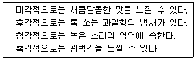
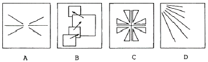
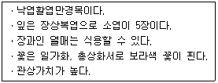
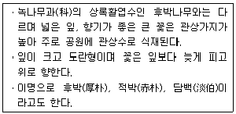
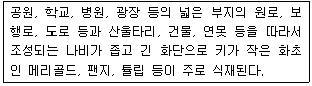
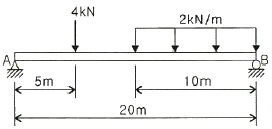
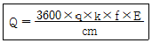
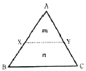

조경산업기사 (2015-09-19 기출문제)
1과목: 조경계획 및 설계
1. 다음 유형의 공간 중 공간적 위요감이 가장 크게 느껴지는 유형은?
- 관개형 공간
- 위요관개형 공간
- 반개방형 공간
- 수직형 공간
(정답률: 88%)

2. 보행자가 외부공간 내의 한 지점에서 표고차가 있는 다른 지점으로 안전하고 편리하게 이동할 수 있도록 설치하는 시설이 아닌 것은?
- 계단
- 램프(ramp)
- 험프(hump)
- 오토워크
(정답률: 90%)
3. 특별시장ㆍ광역시장ㆍ시장 또는 군수는 도시녹화를 위하여 필요한 경우에 도시지역 안의 일정지역의 토지소유자 또는 거주자와 녹화계약을 할 수 있다. 녹화계약으로부터 지원 받기 위한 조건에 해당되지 않는 것은? (단, 도시공원 및 녹지 등에 관한 법률을 적용한다.)
- 수림대(樹林帶) 등의 보호
- 해당 지역을 대표하는 식생의 증대
- 해당 지역의 면적 대비 식생 비율의 증가
- 해당 지역을 대표하는 멸종위기종의 증대
(정답률: 73%)
4. 축적(scale)에 관한 설명으로 옳지 않은 것은?
- 도면에는 척도를 기입하는 것이 원칙이다.
- 실물과 같은 크기로 그린 배척, 실물보다 확대하여 그린 현척이 있다.
- 한 도면 안에 사용한 척도는 도면의 표제란에 기입한다.
- 척도의 표시를 “A : B"로 할 때 B는 ”물체의 실제 크기“를 의미한다.
(정답률: 78%)
5. 도시공원 및 녹지 등에 관한 법률에 명시된 도시공원에서의 금지행위가 아닌 것은?
- 공원시설을 훼손하는 행위
- 공원에서 애완동물을 동반하여 입장하는 행위
- 나무를 훼손하거나 이물질을 주입하여 나무를 말라죽게 하는 행위
- 심한 소음 또는 악취가 나게 하는 등 다른 사람에게 혐오감을 주는 행위
(정답률: 93%)
6. 도시계획시설 중 공공ㆍ문화체육시설에 해당하지 않는 것은? (단, 도시ㆍ군계획시설의 결정ㆍ구조 및 설치기준에 관한 규칙을 적용한다.)(관련 규정 개정전 문제로 여기서는 기존 정답인 4번을 누르면 정답 처리됩니다. 자세한 내용은 해설을 참고하세요.)
- 도서관
- 공공청사
- 학교
- 광장
(정답률: 78%)
7. 영국(1850~1900)에서 일어난 소정원 운동을 주도한 대표적 인물은?
- 루우돈(John Charles Loudon)
- 베리(Sir Charles Barry)
- 로빈슨(William Robinson)과 재킬여사(Gertrude Jeckyll)
- 로렌스 헬프린(Lorence Helprin)
(정답률: 81%)
8. 조선시대에 네모난 연못 속에 둥근 모양의 섬을 꾸미는 소위 방지원도형이 사용되었는데 이는 어떤 사상의 영향이 가장 강하다고 볼 수 있는가?
- 신선사상(神仙思想)
- 풍수지리사상(風水地理思想)
- 무속사상(巫俗思想)
- 음양사상(陰陽思想)
(정답률: 70%)
9. 석가산 수법이 성행되었다고 볼 수 있는 시대는?
- 삼국시대
- 통일신라시대
- 고려시대
- 조선시대
(정답률: 81%)
10. 중국정원에서 원자(院子)에 관한 설명으로 가장 적합한 것은?
- 송나라 시대 사대부의 정원이다.
- 중국 명대의 정원에 관한 전문서적이다.
- 정원을 다스리는 기구로서 송나라 시대부터 있었다.
- 건물과 건물 사이에 자리잡은 공간으로 화훼류를 가꾸었다.
(정답률: 63%)
11. 이스파한은 페르시아의 사막지대에 위치한 오아시스 도시이다. 이 이스파한의 계획 요소가 아닌 것은?
- 광로(Chahar Bagh)
- 왕의 광장(Maidan)
- 오벨리스크(Obelisk)
- 40주궁(Tchihil-Sutum)
(정답률: 73%)
12. 프레드릭 로우 옴스테드(F.L.Olmsted)의 조경 업적에 관한설명으로 옳지 않은 것은?
- 국립공원에 많은 기여를 하였다.
- 도시 내 오픈 스페이스 확보에 기여하였다.
- 군주적인 장원(莊園)생활에 알맞은 환경을 조성하였다.
- 센트럴파크라는 전원(田園)풍경식 대공원을 설계 시공하였다.
(정답률: 82%)
13. 조선시대 민가 정원의 특성을 설명한 것 중 가장 거리가 먼 것은?
- 뒤뜰에 화계를 만들어 꽃나무가 식재된다.
- 안뜰은 괴석, 세심석 등 점경물로 꾸며진다.
- 풍수도참설의 영향으로 뒤뜰이 주정원으로 꾸며졌다.
- 유교의 영향으로 남성과 여성을 위한 공간이 엄격히 구분되었다.
(정답률: 67%)
14. 다음 중 바로크(baroque)시대 조경양식의 특징은?
- 단순 명료성
- 명쾌한 균제미
- 온화와 단조로움
- 번잡함과 극도의 세부기교
(정답률: 80%)
15. 다음 중 조경설계기준상의 단위놀이시설에 관한 설명으로 틀린 것은?
- 시소 2연식의 경우 길이 3.6m, 폭 1.8m를 표준규격으로 한다.
- 미끄럼판은 높이 1.2(유아용) ~ 2.2m(어린이용)의 규격을 기준으로 한다.
- 그네의 안장과 모래밭과의 높이는 50 ~ 100cm가 되도록 하며, 이용자의 신체를 고려하여 결정한다.
- 모래밭의 모래막이의 마감면은 모래면보다 5cm 이상 높게 하고, 폭은 12 ~ 20cm를 표준으로 하며, 모래밭쪽의 모서리는 둥글게 마감한다.
(정답률: 70%)
16. 제도 통칙에서 그림의 모양이 치수에 비례하지 않아 착각될 우려가 있을 때 사용되는 문자 기입 방법은?
- AS
- KS
- NS
- PS
(정답률: 80%)
17. 다음 설명과 같은 특징을 갖는 색은?

- 올리브색
- 바다색
- 갈색
- 오렌지색
(정답률: 95%)
18. 먼셀 색입체에 관한 설명 중 틀린 것은?
- 색상은 명도 축을 중심으로 원주상에 구성되어 있다.
- 명도 번호가 클수록 명도가 높고, 작을수록 명도가 낮다.
- 채도는 색입체의 중심에 가까울수록 증가한다.
- 채도는 표면색의 선명함을 나타내지만, 일반적으로 선명함은 표면색에서 뿐 아니라 빛의 색에서도 느낄 수 있다.
(정답률: 65%)
19. 물체의 앞이나 뒤에 화면을 놓은 것으로 생각하고, 시점에서 물체를 본 시선과 그 화면이 만나는 각 점을 연결하여 물체를 그리는 투상법은?
- 투시도법
- 사투상법
- 정투상법
- 표고 투상법
(정답률: 79%)
20. 다음 A~D의 그림이 내포하고 있는 주 원리가 잘못 표시된 것은?

- A : 균형(balance)
- B : 통일(unity)
- C : 대칭(symmetry)
- D : 점이(gradation)
(정답률: 85%)
2과목: 조경식재
21. 녹색 수피를 갖는 수종이 아닌 것은?
- 황매화
- 죽단화
- 벽오동
- 황벽나무
(정답률: 43%)
22. 아까시나무와 회화나무에 대한 설명으로 틀린 것은?
- 두 수종 모두 기수우상복엽이다.
- 두 수종 모두 꽃 피는 시기는 5월 초이다.
- 두 수종 모두 뿌리가 천근성이다.
- 아까시나무에는 가시가 있으나 회화나무에는 없다.
(정답률: 76%)
23. 다음 중 Styrax japonicus Siebold & Zucc에 대한 설명으로 옳지 않은 것은?
- 줄기는 흑갈색이다.
- 열매는 삭과이다.
- 잎의 배열은 호생이다.
- 꽃은 흰색이며 향기가 난다.
(정답률: 52%)
24. 식재형의 구성에 의한 배식을 가장 바르게 설명한 것은?
- 식재형의 기본형은 반드시 3의 배수여야 한다.
- 두 그루의 수목을 근접하게 식재하면 대립 되어 보인다.
- 2본식 식재형에서 대식은 주로 동양식 정원에서 사용한다.
- 삼각식수는 모든 식재방법에 있어서 간격을 결정하는 기초가 된다.
(정답률: 70%)
25. 식물 분류학상 우리나라에 자생하는 식물로 1속 1종에 속하는 식물은?
- 미선나무
- 물푸레나무
- 푸조나무
- 개서어나무
(정답률: 79%)
26. 1992년 브라질 리우데자네이루에서 열린 유엔환경개발회의(UNCED)에서 합의한 주요 사항이 아닌 것은?
- 21세기 행동강령 : 21세기 지구환경보전의 실천지침과 행동강령을 규정
- 생물다양성협약 : 열대림의 파괴를 줄이고 사라져 가는 생물좌원을 보존하여 종과 유전자 자원의 보전책을 모색
- 기후변화협약 : 이산화탄소 방출을 억제하고 지구온난화 방지를 위한 범세계적 및 국가적인 규제책 모색
- 산림원칙 : 산림자원을 보유한 개발도상국가는 산림자원 개발 시 반드시 세계적으로 허가를 받아야 함.
(정답률: 74%)
27. 식물생육에 필요한 토양의 최소깊이가 30cm 일 때, 이곳에서 생육할 수 있는 식생은? (단, 토양등급은 중급, 배수층 두께는 10cm)
- 잔디, 초본
- 소관목
- 대관목
- 천근성 교목
(정답률: 67%)
28. 식재설계 시 기초자료가 되는 기존식생의 조사분석은 다음 중 어느 분석항목에 속하는 과정인가?
- 물리적 환경조사
- 시각적 환경조사
- 미학적 환경조사
- 사회적 환경조사
(정답률: 75%)
29. 일조가 식물에 미치는 영향에 관한 설명 중 틀린 것은?
- 너도밤나무와 주목은 빛이 약한 곳에서도 잘 생육하는 음수이다.
- 태양광선은 직사광선과 반사광선으로서 식물체에 도달하여 광합성 작용의 에너지가 된다.
- 일조가 좋은 곳일수록 나뭇잎이 무성해지며, 나뭇잎이 무성해질수록 생장이 좋아진다.
- 증산작용은 온도, 바람의 영향을 받지만 일조의 강도가 높아지면 증산작용도 증가한다.
(정답률: 64%)
30. 소나무류(Hard Pine)와 잣나무류(Soft Pine)의 식별에 대한 설명으로 잘못된 것은?
- 잎수는 잣나무류가 3 ~ 5개이고, 소나무류는 2 ~ 3개이다.
- 아린은 잣나무류가 곧 떨어지고, 소나무류는 끝까지 남아있다.
- 잣나무류는 가지에 침엽이 달렸던 자리가 도드라져 있고 소나무류는 밋밋하다.
- 잣나무류는 실편(實片)은 끝이 얇고 가시가 없으며, 소나무류의 실편은 끝이 두껍고 가시가 있다.
(정답률: 60%)
31. Wisteria floribunda (willd.) DC.for.floribunda 의 성상은 무엇인가?
- 교목
- 관목
- 만경목
- 초화
(정답률: 77%)
32. 브라운 블랑케의 식생조사 방법 설명으로 옳은 것은?
- 주로 동물 집단과 식물 집단의 생활 상태를 조사한다.
- 각 식물종의 조합과 입지조건이 다른, 군락이 가장 잘 발달된 지역을 선택한다.
- 상재도는 식물전체의 피복율과 층별 식피율의 백분율, 7단계로 판정한다.
- 조사구역의 면적은 관목림은 50 ~ 200m2 이다.
(정답률: 49%)
33. 다음의 설명에 적합한 수종은?

- Akebia quinata
- Stauntonia hexaphylla
- Ficus oxyphylla
- Clematis patens
(정답률: 44%)
34. 다음 중 식재방법에 대한 설명으로 옳지 않은 것은?
- 원래 생육지의 방향대로 식재지에 심는 것이 좋다.
- 풀잎과 짚 등의 거친 거름 소재를 식재 구덩이 밑에 넣어서는 안 된다.
- 구덩이를 팔 때 나온 겉흙과 속흙은 섞어서 메움 작업 시 재사용한다.
- 물을 충분히 주고 죽상태가 되도록 나무막대기로 충분히 쑤셔서 뿌리분이 흙과 밀착되도록 한다.
(정답률: 79%)
35. 다음 중 비료에 대한 요구도(要求度)가 가장 큰 잔디는?
- 버뮤다그래스
- 켄터키블루그래스
- 라이그래스
- 한국잔디
(정답률: 63%)
36. 다음 중 오동나무의 속명에 해당되는 것은?
- Firmiana
- Paulownia
- Campsis
- Fraxinus
(정답률: 48%)
37. 질소가 식물이 이용할 수 있는 형태로 전환되는 질소고정(nitrogen fixation)을 할 수 있는 종은?
- Zelkova serrata
- Salix koreensis
- Quercus mongolica
- Alnus japonica
(정답률: 41%)
38. 다음 중 엽록소의 구성 성분이 되는 다량원소는?
- 마그네슘(Mg)
- 황(S)
- 칼륨(K)
- 칼슘(Ca)
(정답률: 65%)
39. 다음 설명에 대한 수종으로 옳은 것은?

- Magnolia sieboldii
- Magnolia obovata
- Magnolia denudata
- Magnolia kobus
(정답률: 50%)
40. 다음 설명에 적합한 화단양식은?

- 침상화단
- 리본화단
- 카펫화단
- 기식화단
(정답률: 65%)
3과목: 조경시공
41. 일반적으로 풍화한 시멘트에서 나타나는 성질이 아닌 것은?
- 비중감소
- 응결지연
- 강도발현 저하
- 강열감량의 감소
(정답률: 50%)
42. 레디믹스트 콘크리트(ready mixed concrete)를 사용할 경우의 장점에 해당하지 않는 것은?
- 양질이며 균질한 콘크리트를 얻을 수 있다.
- 콘크리트의 워커빌리티를 조절하기 용이하다.
- 콘크리트 치기 능률이 향상되고 공사기간이 단축된다.
- 현장에서는 콘크리트 치기와 양생에만 전념할 수 있다.
(정답률: 55%)
43. 다음 혼화재료 중 콘크리트의 워커빌리티를 개선하는 효과가 없거나 가장 적은 것은?
- AE제
- 유동화제
- 플라이애시
- 응결ㆍ경화촉진제
(정답률: 50%)
44. 그림과 같은 단순보에서 점 B에 작용하는 반력의 크기는 몇 kN인가?

- 2
- 4
- 8
- 16
(정답률: 38%)
45. 다음 중 흙의 연경도(consistency)에 대한 설명 중 옳지 않은 것은?
- 액성한계나 소성지수가 큰 흙은 연약 점토지반이라고 볼 수 있다.
- 액성한계가 큰 흙은 점토분을 많이 포함하고 있다는 것을 의미한다.
- 소성한계가 큰 흙은 점토분을 많이 포함하고 있다는 것을 의미한다.
- 액성한계와 소성한계가 가깝다는 것은 소성이 크다는 것을 의미한다.
(정답률: 47%)
46. 후시(B.S.)가 1.550m, 전시(F.S.)가 1.445m 일 때 미지점의 지반고가 100.000m 이었다면 기지점의 높이는?
- 97.0⑤ m
- 98.450 m
- 99.895 m
- 100.695 m
(정답률: 66%)
47. 「석재판붙임용재(부정형동)」의 할증률은?
- 3%
- 5%
- 10%
- 30%
(정답률: 69%)
48. 계획대상지의 부지정지 및 다짐에 필요한 성토량이 1000m3이다. 인접지역의 토양을 적재용량이 10m3인 덤프트럭으로 운반할 때 소요되는 덤프트럭은 모두 몇 대인가? (단, L = 1.15, C = 0.9인 경우이다.)
- 100
- 111
- 115
- 128
(정답률: 58%)
49. 활엽수재에는 있으나 침엽수재에는 없는 구성 요소로만 나열된 것은?
- 유세포와 목섬유
- 유세포와 도관
- 목섬유와 도관
- 가도관과 목섬유
(정답률: 65%)
50. 최대계획우수유출량(m3/s)의 산정에서 합리식에 대한 설명 중 틀린 것은?
- 배수유역이 커지면 유출량도 커진다.
- 불투수포장이 작을수록 유출량은 커진다.
- 유출계수가 커지면 유출량이 커진다.
- 유달시간 내의 평균강우강도가 큰 지역은 유출량이 커진다.
(정답률: 64%)
51. 공사원가 계산에 있어 일반관리비에 대한 설명으로 옳은 것은?
- 일반관리비는 본사 경비이다.
- 이윤 요율 적용 시 합산하여 산정하지 않는다.
- 일반관리비 요율 적용 시 재료비는 합산하지 않는다.
- 순공사원가 항목으로 노무관리비 성격으로 계상한다.
(정답률: 55%)
52. 다음 중 산업재해 보상보험료(산재보험료)에 대한 설명으로 적합하지 않은 것은?
- 산재보험료는 고정요율로서 5% 이다.
- 총괄내역서 작성 시 경비 항목으로 계상한다.
- 법령에 의하여 강제적으로 가입되는 항목이다.
- 노무비의 총액에 일정 요율을 곱하여 산정한다.
(정답률: 56%)
53. 다음 굴삭기의 시간당 작업량 계산 공식 중 'f'가 의미하는 것은?

- 버킷용량
- 버킷계수
- 작업효율
- 체적환산계수
(정답률: 57%)
54. 네트워크 공정표 중 더미(dummy)에 대한 설명으로 맞는 것은?
- 선행작업을 표시한다.
- 작업일수는 1일이다.
- 가장 시간이 긴 경로를 나타낸다.
- 선행과 후속의 관계만을 나타낸다.
(정답률: 67%)
55. 품질관리 및 검사에 대한 설명으로 옳지 않은 것은?
- 공사용 재료는 사용 전에 감독자에게 견본 또는 자료를 제출하고 승인을 얻어 사용한다.
- 시방서에 재료의 품질 및 규격이 규정되어 있지 않은 경우 제조ㆍ생산 회사의 품질기준을 우선적으로 따른다.
- 견본제출 또는 현장 확인 등의 사전검사에도 불구하고 공사용 재료가 현장에 반입되면 감독자로부터 사용여부를 승인받아야 한다.
- 검사 또는 시험에 불합격된 재료는 지체없이 공사현장으로부터 반출한다.
(정답률: 65%)
56. 벽돌쌓기 시공 시 주의사항으로 옳지 않은 것은?
- 벽돌은 쌓기 전에 물을 축여 놓으면 쌓은 후 부스러질 우려가 있으므로 관리에 유의한다.
- 모르타르는 정확히 배합해 쓰고, 2시간이 지난 것은 사용하지 ㅇ낳는다.
- 줄눈나비는 가로와 세로 10mm를 표준으로 하고, 줄눈에 모르타르가 빈틈없이 채워지도록 한다.
- 쌓기 도중에 중단할 때에는 층단들여 쌓기로 하고 직각으로 교차되는 벽의 물림은 켜걸름들여 쌓기로 한다.
(정답률: 53%)
57. 그림과 같은 ABC토지의 1변 BC에 평행하게 m : n= 1 :3 비율로 분할하고자 할 경우 AB의 길이가 75m일 때 AX의 길이는?

- 33.2m
- 36.7m
- 37.5m
- 37.8m
(정답률: 57%)
58. 건축재료의 일반적인 요구 성능(역학적, 물리적, 내구성능, 화학적 등)을 구분할 때 물리적 성능이 아닌 것은?
- 강도
- 비중
- 수축
- 반사
(정답률: 45%)
59. 빛의 측정단위가 틀린 것은?
- 광속 : W
- 광도 : cd
- 조도 : 1x
- 휘도 : sb
(정답률: 60%)
60. 다음 중 식재기반조성의 배수와 관련된 설명으로 옳지 않은 것은?
- 인공지반 위나 일반토사 위에 자갈 배수층을 설치할 때는 ø20 ~ 30mm의 자갈을 사용한다.
- 표면배수는 식재지역 및 구조물 쪽으로 기울어서는 안 되며, 식재지역에 타 지역의 유수가 유입되지 않도록 한다.
- 심토층의 배수가 불량한 식재지역은 필요시 교목 주위에 암거배수를 별도로 설치한다.
- 심토층 집수정에 유입되는 물은 유출구보다 최소 0.15m 낮게 설치한다.
(정답률: 66%)
4과목: 조경관리
61. 옥외레크리에이션의 관리 체계상 주요기능의 관점에서 부체계에 해당하지 않는 것은?
- 운영 관리
- 이용자 관리
- 자원 관리
- 서비스 관리
(정답률: 39%)
62. 조경관리 상례(常例) 계획 중 운영항목에 해당되지 않는 것은?
- 정비
- 재산
- 인ㆍ허가
- 계약
(정답률: 38%)
63. 소나무에 피해를 주는 해충이 아닌 것은?
- 솔나방
- 응애류
- 솔잎혹파리
- 솔잎혹파리먹좀벌
(정답률: 62%)
64. 한국 잔디류의 대표적인 생리 특성에 해당하지 않는 것은?
- 내서성
- 내답압성
- 내한성
- 내습성
(정답률: 55%)
65. 다음 중 이용 측면보다는 자원의 보전측면의 관리가 더욱 강조되는 공원의 유형은?
- 어린이공원
- 근린공원
- 묘지공원
- 국립공원
(정답률: 78%)
66. 배나무 붉은별무늬병의 겨울포자가 기생하기 때문에 배나무 과수원 가까이 식재하지 말아야 할 수목은?
- 화백
- 향나무
- 오동나무
- 히말라야시이다
(정답률: 73%)
67. 다음 중 비료의 영양성분이 10-6-4로 표시된 것에 대한 설명이 옳은 것은?
- 6을 질소(N)의 비율을 나타낸 것이다.
- 10은 인산(P2O5)의 첨가 비율을 나타낸 것이다.
- 4는 가리(K2O)의 비율을 나타낸 것이다.
- 10-6-4로 표시된 비료와 5-3-2로 표시된 비료의 영양분의 양은 같다.
(정답률: 54%)
68. 레크리에이션 공간관리에 있어서 다음 중 가장 원시적이고 재래적인 방법이라 할 수 있는 것은?
- 완전방임형
- 자연회복형
- 육성관리형
- 순환식 개방형
(정답률: 56%)
69. 잔디유지관리에 관한 설명으로 옳지 않은 것은?
- 들잔디는 잎의 길이가 0.03 ~ 0.06m 이내가 되도록 수시로 잔디깎기를 실시한다.
- 잔디깎기 높이를 일정하게 유지하여 잔디의 높이에 단차가 발생하지 않도록 한다.
- 잔디시비는 질소, 인산, 칼리성분이 복합된 비료를 1회에 m2당 30g씩 살포한다.
- 잔디의 생육을 돕기 위하여 난지형 잔디는 봄, 가을에, 한지형 잔디는 늦봄에서 초여름에 뗏밥을 준다.
(정답률: 58%)
70. 토양의 입경조성에 의한 토양의 분류를 가리키는 것은?
- 토성
- 토양통
- 토양반응
- 토양분류
(정답률: 60%)
71. 다음 중 음수대의 설치 및 유지관리에 대한 설명으로 옳지 않은 것은?
- 동파방지를 위한 보온시설 및 퇴수시설을 설치하여야 한다.
- 인입관은 해당 지역의 동결심도를 고려하여 적정 깊이 이상으로 매설해야 한다.
- 급ㆍ배수시설은 조경공사표준시방서의 해당 항목을 따르며, 음수대에 별도의 제수밸브를 설치한다.
- 배수구는 구조적인 안전이 최우선 고려사항이므로 일체형으로 설치하며, 별도의 관리시설을 설치하지 않고 전체 교체한다.
(정답률: 77%)
72. 다음 중 토사포장 도로의 유지관리에 고려해야 할 항목으로 가장 관계가 적은 것은?
- 강우 시 지반의 연약화
- 동결된 노면의 해동 후 상태
- 지지력 약화에 의한 표면의 균열
- 차량 통행량 증가에 의한 노면의 약화
(정답률: 43%)
73. 침투성 살균제에 대한 설명으로 옳은 것은?
- 곰팡이의 세포벽을 잘 침투하는 살균제
- 식물체 전체로 이행하여 살균효과로 보이는 살균제
- 곰팡이의 핵까지 침투하여 직접적으로 억제하는 살균제
- 토양침투력이 우수하여 뿌리병 방제에 효과적인 살균제
(정답률: 58%)
74. 기존의 포장구간의 균열 및 파손장소를 부분 보수 한 뒤에 사용하는 보수공법으로서 임시적 포장 재생 방법이 아니라 새로운 포장면을 조성하지 위하여 사용하는 아스팔트 포장 보수공법은?
- 패칭공법
- 표면처리공법
- 덧씌우기공법
- 치환공법
(정답률: 51%)
75. 패칭(Patching)공법으로 보수가 곤란한 아스팔트콘크리트(아스콘)의 파손 유형은?
- 부분적 박리
- 국부적 침하
- 일부면의 균열
- 전면적인 마모
(정답률: 60%)
76. 0.2mm 이하의 콘크리트 균열부를 처리하는 데 주로 사용하는 공법으로 와이어브러쉬로 청소한 후 에폭시계 재료로 폭 5cm, 깊이 3mm 정도를 도포하는 콘크리트 보수공법은?
- 표면실링공법
- 압식주입공법
- V자형 절단공법
- 시멘트 모르타르공법
(정답률: 70%)
77. 잔디관리 방식 중 잔디의 뗏밥(培土, Topdressing)과 관련된 설명이 옳지 않은 것은?
- 생리ㆍ생태적 효과로는 발아 보호력 촉진
- 생리ㆍ생태적 효과로는 맷트(mat) 형성을 촉진
- 물리적 효과로는 그린면을 평편하게 하여 잔디의 균일한 생육을 도모
- 물리적 효과로는 잔디밭 표층토의 물리성을 개량하게 되어 토성개선 효과
(정답률: 54%)
78. 식재지 지주목의 결속을 고치는 시기로 가장 적당한 것은?
- 3 ~ 5월
- 7 ~ 9월
- 9 ~ 11월
- 1 ~ 3월
(정답률: 38%)
79. 정지(整枝) 및 전정(剪定)의 효과라 할 수 없는 것은?
- 화아분화의 촉진
- 수목의 규격화 추구
- 수목의 구조적 안전성 도모
- 꽃눈발달과 영양생장의 균형 도모
(정답률: 60%)
80. 불합리한 농약의 혼용은 약효의 경감, 약해의 원인 또는 급성독성의 현저한 증가를 야기한다. 농약 혼용 시 주의할 사항이 아닌 것은?
- 혼용에 의한 활성의 변화
- 혼용에 의한 화학적 변화
- 혼용에 의한 물리성의 변화
- 혼용에 의한 살포시기의 변화
(정답률: 75%)